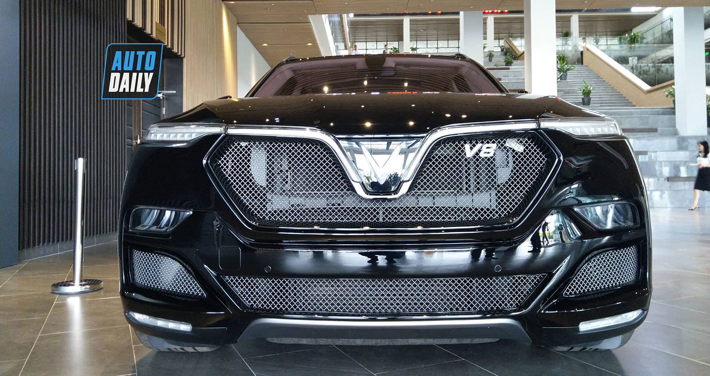
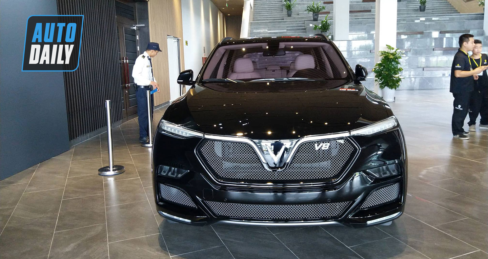
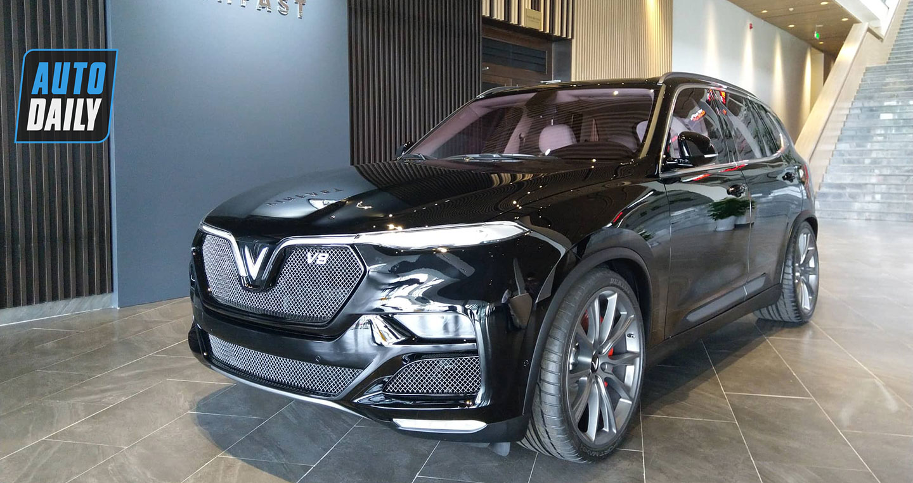

Phiên bản mạnh nhất của mẫu Lux SUV tiếp tục xuất hiện trong một chương trình của VinFast tại nhà máy của hãng ở Hải Phòng.

Sau khi ra mắt công chúng toàn cầu tại Triển lãm Geneva 2019, Lux V8 đã được đưa về Việt Nam và hiện đang được trưng bày tại khuôn viên nhà máy VinFast ở Hải Phòng. Sự xuất hiện của mẫu xe “hàng khủng” nhà VinFast này đã thu hút được đông đảo sự quan tâm của truyền thông và người yêu xe.

VinFast Lux V8 được phát triển từ nguyên mẫu là chiếc SUV Lux SA2.0 nhưng vượt trội toàn diện cả về hình thức bên ngoài lẫn các thông số kỹ thuật bên trong. Trong đó, nổi bật nhất là khối động cơ V8 mạnh mẽ. Với 8 xi-lanh xếp hình chữ V, công suất tối đa lên tới 455 mã lực, mô-men xoắn cực đại 624 Nm, VinFast Lux V8 có thể đạt tốc độ tối đa lên tới 300 km/h.

Để nhấn mạnh đặc tính sang trọng và độc đáo của VinFast Lux V8, hàng ghế dưới của phiên bản đặc biệt đã được cân chỉnh kỹ càng để mang đến sự thoải mái và tiện nghi tối đa cho người ngồi sau.VinFast Lux V8 sẽ được sản xuất với số lượng hạn chế và bán ra thị trường trong năm 2020.